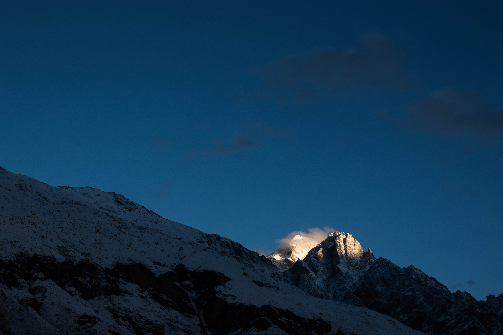
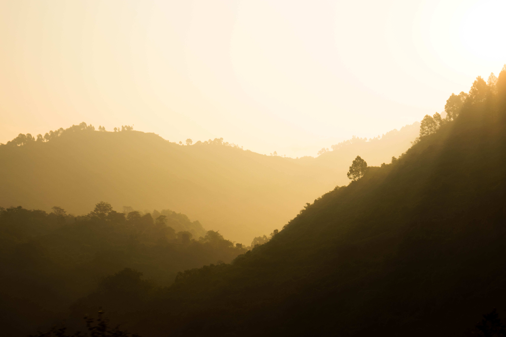
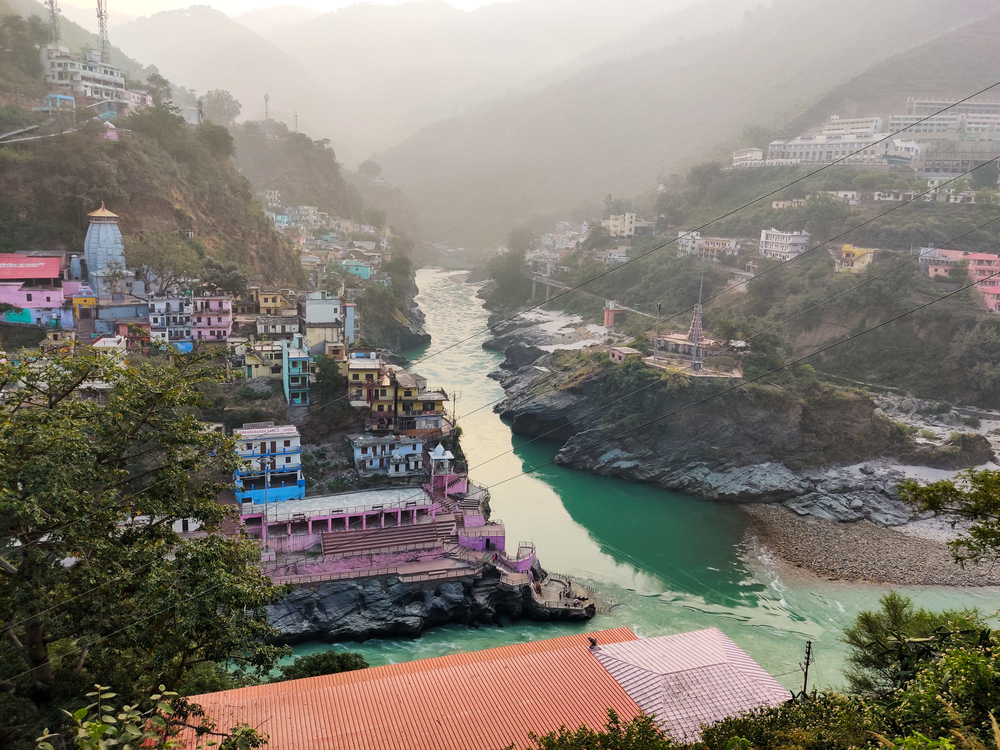
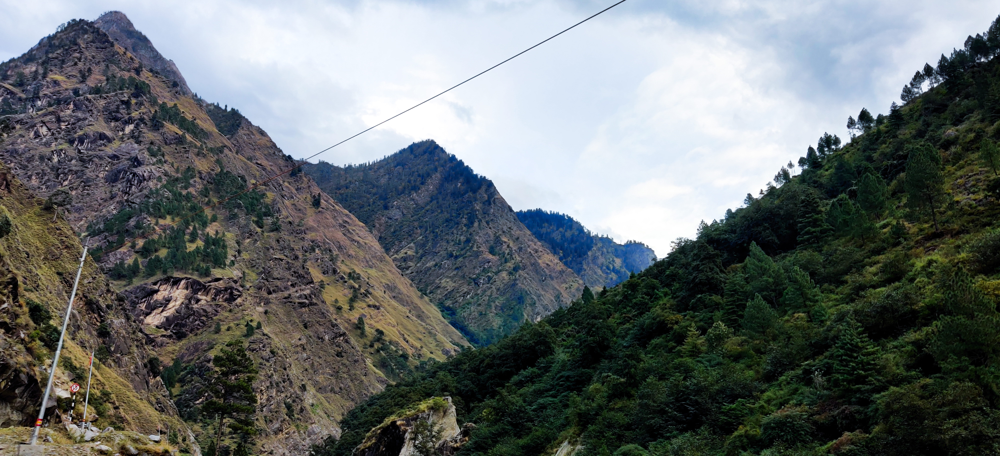
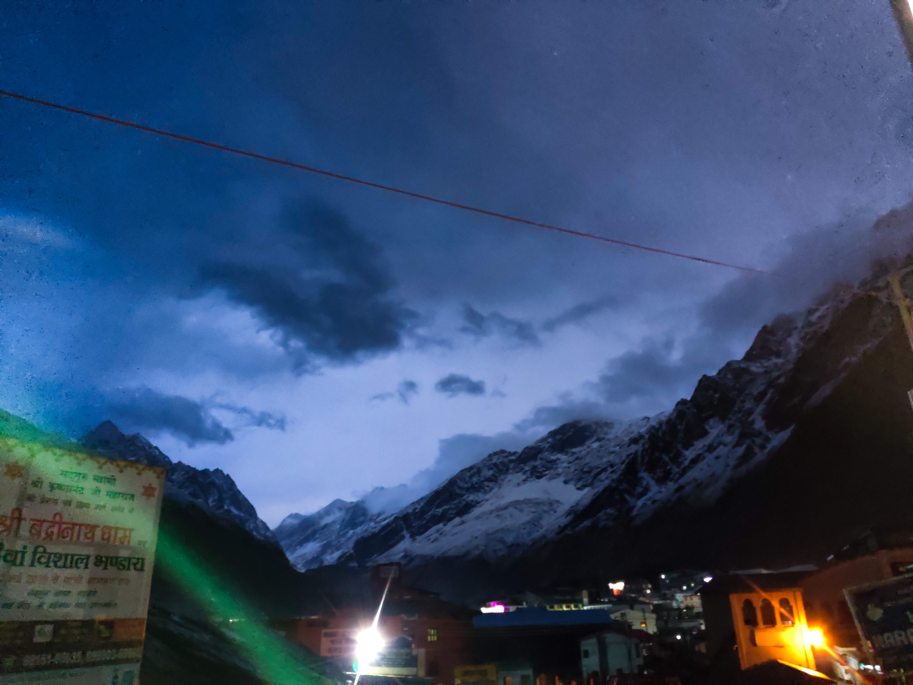
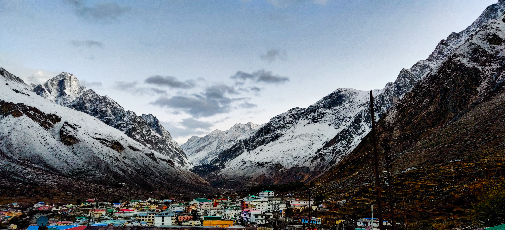
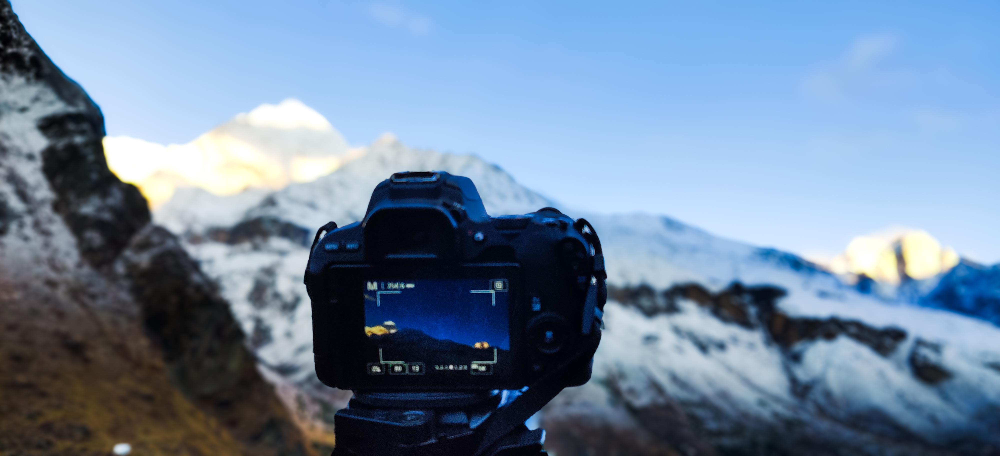
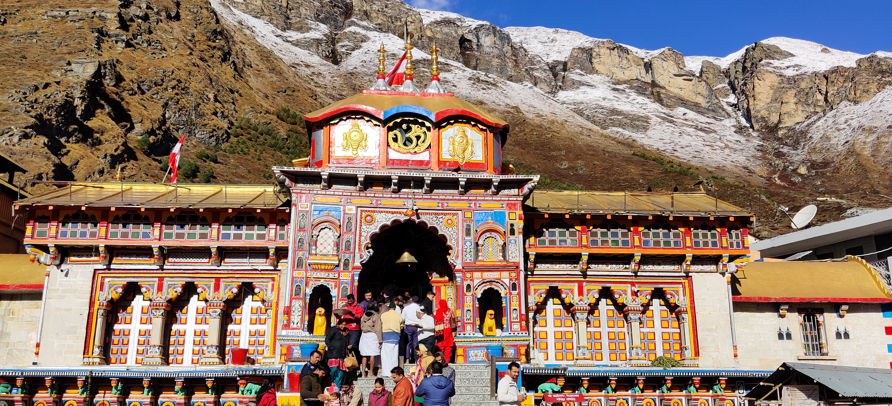
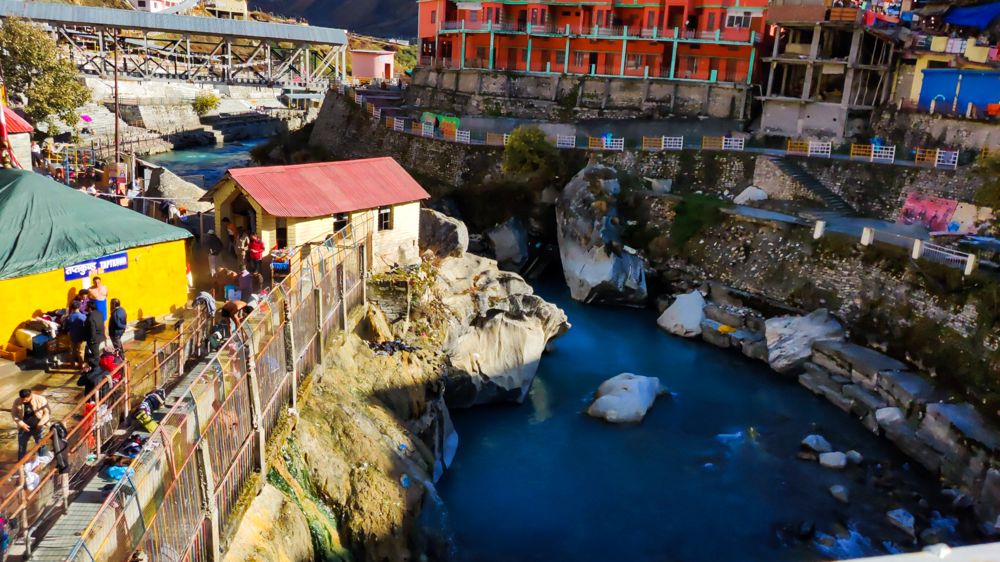
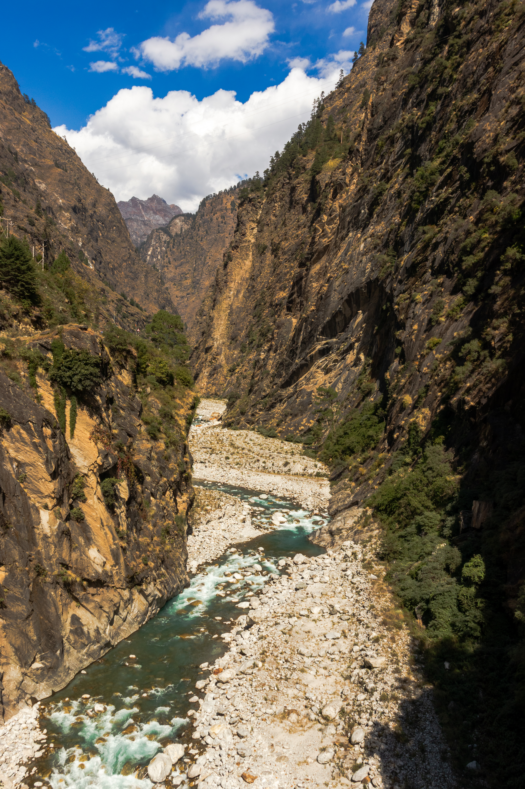

There are places you visit, places you admire, and then there are places that quietly become a part of who you are. Badrinath was that place for me.
Some journeys change your destination. Some change your perspective. And then there are journeys like this one—the kind that purify your soul, challenge your thoughts, and leave you searching for answers you never knew you were looking for.
This wasn't just another trip tucked away in my gallery of memories. It was an experience that stripped away all the noise of everyday life and left me face to face with myself. Standing amidst the towering Himalayas, listening to the Alaknanda River carve its way through the valley, and feeling the divine aura that surrounds Badrinath, I found myself asking questions I had never paused to ask before.
Who am I?
What am I doing?
And why am I doing it?
For the first time, I realized that sometimes the greatest journeys aren't the ones measured in kilometres, but in the distance between who you are and who you're becoming.
If I'm being honest, this is where my journey as a storyteller truly began.
I often think that if I had the courage, I would've started sharing my stories with all of you back in 2017, right after my Ladakh trip. But maybe life had different plans. As they say, good things take time. Looking back now, I feel everything happened exactly when it was meant to.
Among all the spontaneous trips I've taken over the years, this one remains the most special. It was completely unplanned, yet it gave me the biggest prompt of my life. It wasn't just a vacation; it became a turning point. Somewhere between the winding mountain roads, the chants echoing through the temple town, the crisp Himalayan air, and the peaceful silence that only the mountains can offer, I found a direction I didn't even know I was searching for.
That direction eventually led me here—to Nazariya.
Until then, photography was simply about clicking beautiful pictures. But Badrinath taught me that every photograph carries a feeling, every frame hides a story, and every journey deserves to be remembered not just through images, but through words. It made me realize that my camera wasn't just a device to capture places—it was a way to preserve emotions, moments, and memories that time could never take away.
In many ways, this journey shaped the person I am today. Every trip I've taken since then, every story I've written, every photograph I've shared, and every memory I've preserved through *Nazariya* traces its roots back to this one unforgettable experience.
It's funny how life works.
Sometimes, the most unplanned journeys end up giving you the greatest purpose.
And this… was mine.

It all started with a simple plan.
A quick weekend escape to Rishikesh—to spend some time by the Ganga, soak in its peaceful vibes, and then return home. Nothing extravagant. Just another spontaneous road trip, or at least, that's what we thought.
It was a Friday night when we left. Three families, two cars, and eight excited souls—my family, my uncle's family, and my brothers. As the city lights slowly disappeared in our rear-view mirrors, laughter, conversations, and endless playlists filled the journey. None of us knew that this road trip would become one of the most defining experiences of our lives.
Hours passed as the highway stretched endlessly before us. Somewhere in the middle of the journey, a simple thought sparked a much bigger idea.
"Why stop at Rishikesh?"
If we had already travelled this far, why not continue into the Himalayas? Why not seek the blessings of Lord Vishnu at the sacred Badrinath Temple?
It was one of those decisions made in a matter of minutes, without much planning or preparation. Looking back now, I believe the best journeys often begin exactly like that.
By the time we reached Rishikesh, it was around 2 or 3 in the morning. But instead of driving ahead, we found a long queue of vehicles waiting near police barricades. The authorities had closed the mountain roads for the night because driving through those narrow Himalayan routes in complete darkness was considered unsafe.
We were told the gates would reopen around 5 a.m.
There was nothing to do except wait.
With no hotel bookings and no reason to search for one at that hour, our cars became our temporary bedrooms. We reclined the seats and tried to get some sleep.
For a while, everything was quiet.
Then the cold arrived.
We had packed clothes suitable for Rishikesh, never expecting the early morning Himalayan chill. The cold air slowly found its way through every tiny gap in the windows, making sleep almost impossible. We pulled our jackets tighter, rubbed our hands together, and waited for the first signs of dawn.
And then, almost magically, the darkness began to fade.
The eastern sky slowly turned shades of orange and gold. The first rays of sunlight touched the mountains, and with them came a gentle warmth. It wasn't enough to chase away the cold completely, but it felt comforting—as if nature itself had wrapped us in a silent embrace after a long night.
Standing there, watching the sun breathe life back into the valley, I felt something I couldn't explain.
It didn't feel like we were simply waiting for a road to open.
It felt like we were waiting for a new chapter of life to begin.
Little did I know, the blessings of this journey had already started finding me, long before I would stand before the doors of Badrinath.

As the first rays of sunlight chased away the cold, we finally began the journey that was never part of the plan.
The roads of Uttarakhand welcomed us with open arms. They don't call it Dev Bhoomi—the Land of the Gods—for no reason. Every turn revealed a new masterpiece. Towering mountains stood guard over deep valleys, waterfalls emerged from hidden cliffs. Every kilometre made us fall a little more in love with the Himalayas.
Our first major stop was Devprayag—the sacred confluence where the gentle Alaknanda and the fierce Bhagirathi unite to become the holy River Ganga.
Standing there, I witnessed something I had only ever read about. On one side flowed the Alaknanda—calm, graceful, and almost meditative. On the other, the Bhagirathi rushed forward with untamed energy, crashing against the rocks with a force that demanded attention.
Two rivers.
Two completely different personalities.
One sacred beginning.
It was the first time in my life that I experienced silence within sound.
The roaring water was loud enough to drown every conversation around me, yet somehow, it created a stillness inside me that words can never truly describe. It wasn't a silence you hear with your ears; it was one you feel deep within your soul.
No photograph can capture it.
No video can recreate it.
And no story, no matter how beautifully written, can fully explain it.
It is one of those rare moments that can only be experienced by standing there—feeling the cool mountain breeze, watching the two rivers embrace each other, and allowing yourself to become a small part of something that has existed for centuries.
That was the moment I truly understood why the Ganga is considered sacred. She is born from two completely different forces—one calm, one fierce. Yet together, they flow as one. Perhaps that's what nature has always been trying to teach us. Life doesn't ask us to choose between peace and strength. It asks us to carry both within ourselves.
And maybe, just maybe, that's why places like Devprayag don't just show you the beauty of nature. They quietly help you discover the beauty within yourself.

Leaving Devprayag behind with a newfound sense of peace, we continued our journey with hearts lighter than before. It felt as if the meeting of the two rivers had washed away more than just our thoughts.
From that moment on, the Alaknanda River became our companion.
While the mighty Bhagirathi begins its journey from the sacred Gaumukh Glacier near Gangotri, our path stayed with the Alaknanda. Its emerald waters flowed against us, as we traced it upstream toward its source, almost as if it was guiding us toward our destination. We didn't need a map anymore—we simply followed the river.
Kilometre after kilometre, the road twisted through the Himalayas, hugging mountains on one side and overlooking deep valleys on the other. Every bend unfolded a new masterpiece. Snow-fed waterfalls crashed down rocky cliffs, clouds drifted lazily through the peaks, and tiny villages rested peacefully in places where life seemed untouched by time.
Every few kilometres, we found ourselves pulling over. Not because we had to. But because the mountains demanded it.
Some views were too beautiful to drive past. Some moments deserved more than just a glance through the car window. We stood there, breathing in the crisp mountain air, letting the silence of the Himalayas speak louder than words ever could.
The Alaknanda never left our side.
Sometimes it rushed wildly over giant boulders, roaring with incredible force. At other times, it flowed so gently that it mirrored the mountains above it, reminding us that even the same river can wear different faces.
And perhaps that's the beauty of Uttarakhand. Every road tells a story. Every river teaches a lesson. Every mountain humbles you. As we continued following the Alaknanda towards Badrinath, it no longer felt like we were simply travelling to a temple. It felt as though the river itself was leading us to an experience that had been waiting for us all along.

The closer we got to Badrinath, the grander the mountains became. Every passing kilometre felt like a step closer to something divine.
We made countless stops along the way—not because we had planned them, but because the Himalayas kept giving us reasons to pause. Every viewpoint was more breathtaking than the last, making it impossible to simply drive past.
Somewhere during the journey, a thought came up.
"Should we go to Auli instead?"
It was tempting. After all, Auli is known for its snow-covered slopes and spectacular views. For a few moments, our minds told us to change our route.
But our hearts had already made the decision. We had come this far for Badrinath, and somehow, all of us felt drawn back towards it. Without another discussion, we simply continued following the road that had been calling us since Rishikesh. Sometimes, the heart knows the destination long before the mind understands it.
As evening settled over the Himalayas, we finally reached Badrinath around 6 or 7 p.m. The temple town rested quietly beneath the towering peaks, wrapped in an atmosphere that felt both peaceful and sacred.
The first task was simple—find a place to stay.
After checking into a room and putting our bags down, all we wanted was a little rest. But there was one more mission before the day could end.
Food.The shops would soon be closing, and after spending the entire day on winding mountain roads, a warm meal had become more of a necessity than a craving.
Little did we know, the mountains had planned something far more memorable. As we stepped outside, tiny raindrops began falling from the sky. Within minutes, the rain slowly transformed into delicate snowflakes, drifting silently through the cold mountain air.
For a moment, everything stopped.
The market lights reflected off the falling snow, the streets turned quiet, and all of us stood there like children, watching the season change before our eyes. None of us had expected to witness snowfall that evening, making the moment feel even more magical.
We forgot about the cold. We forgot about the tiredness. For those few minutes, it felt as though time itself had paused. After walking through the snow-covered streets, soaking in every second of that unexpected gift from the mountains, exhaustion finally caught up with us.
We returned to our rooms, carrying smiles that no photograph could ever fully capture.

That night, I had already made a promise to myself. There was no way I was going to miss the first sunrise in Badrinath.
Before going to bed, I set not one, not two, but twenty alarms, all beginning at 4:00 a.m. I wasn't taking any chances. The excitement of witnessing the sunrise in one of India's holiest towns had completely taken over my mind.
Sleep never really came.
Every time I closed my eyes, I imagined the first rays of sunlight touching the snow-covered peaks, the temple slowly waking up, and the mountains glowing in shades of gold. The anticipation was far greater than my tiredness.
Finally... The first alarm rang. Before the second one even had a chance, I was already out of bed. The icy water on my face was enough to wake me completely. I got ready as quickly as I could, layered myself with the only two warm clothes I had packed, grabbed my camera, and quietly slipped out of the room.
Everyone else was still asleep. But I couldn't wait. The mountains were calling.
I hurried through the silent streets of Badrinath. The town was still wrapped in darkness, with only a few dim lights glowing in the distance. The cold morning air bit through my clothes, every breath turning into tiny clouds of mist, yet none of it mattered.
There was only one thing on my mind.
Finding the perfect frame before the sun appeared.
I climbed towards the highest point of the village that I could reach, hoping to witness the first light before anyone else. Every step felt faster than the last, driven by nothing but excitement. Reaching the viewpoint, I quickly unfolded my tripod, mounted my camera, adjusted the composition, checked the exposure, and patiently waited.
Everything was ready.
The mountains stood silently before me.
The sky was beginning to change.
Now, all I had to do was wait for nature to paint its masterpiece.

I opened my camera, and within seconds, the entire valley appeared right in front of my eyes.
The darkness was slowly giving way to the first light of the morning. The sun began to creep over the horizon, its golden rays slowly touching the Himalayan peaks one by one. With every passing second, the valley seemed to wake up.
And then, suddenly, it happened.
The entire landscape transformed.
The mountains began glowing under the warm sunlight, the valley slowly revealed its colours, and standing proudly in the middle of it all was the Badrinath Temple, shining brightly against the mighty Himalayas.
It was one of those moments where you don't know whether to look through your eyes or through your camera.
But then my eyes caught something else.
A small mountain peak stood quietly in the distance, partially covered by a passing cloud. The sunlight fell perfectly across it, creating layers of light and shadow that gave the mountain an almost unreal texture.
It was beautiful.
Not the kind of beautiful you can simply describe.
The kind that makes you forget everything for a moment.
My camera, however, wasn't willing to let that moment pass.
I quickly adjusted my frame, changed my settings, and started capturing every second of the light as it moved across the landscape. I was as ready for that photograph as the mountains were ready for the sunrise.
And perhaps that's what I love most about photography.
You don't just capture a place.
You capture a moment that will never happen in exactly the same way again.

I had already taken hundreds of photographs, but somehow, my heart still wasn't full. I wanted to stay there a little longer. Just a few more minutes.
To watch the light move across the mountains. To see the valley change with every passing ray of sunlight. To simply stand there and absorb everything that was happening in front of me.
Then, suddenly, a voice came from behind.
“Beta, merko bhi photos dikhana.”
I turned around.
An old man was standing behind me, quietly watching what I was doing. There was something incredibly warm and peaceful about his presence. I showed him a few photographs, and we started talking.
And then came the surprise. He was one of the pandits of the Badrinath Temple.
I had no idea that the stranger who had casually asked to see my photographs would turn out to be someone so closely connected to the very place I had travelled so far to experience. What followed was something I never expected from that morning.
Within minutes, our conversation moved far beyond photography or the temple. Sitting together over a simple cup of tea, he began sharing stories, thoughts, and lessons about life.
I have met many people in my life, but very few possessed the depth of understanding that he had. There was no need for complicated words or elaborate explanations. His experiences had already taught him what most of us spend years trying to understand.
We spoke about life. About journeys. About people. About finding peace within yourself.
And somewhere between those conversations and that cup of tea, I realized that perhaps I had found something more valuable than the photograph I had come there to capture. I had found a story.
As time passed, he began preparing to head down towards the temple. I followed him for a while, and before we parted, I promised him that I would meet him again at the temple.
I walked back towards my family with a strange happiness. I hadn't told them anything about my little encounter. We had breakfast together and soon made our way towards the temple for darshan.
And then came the moment I had been waiting for. As we reached the temple, I saw him. He saw me too. With the same warmth as before, he greeted me—and then greeted my entire family. The expressions on my family's faces were priceless.
First came the surprise. Then the questions. And finally, the smiles and praise. They couldn't believe that the person I had casually met on the mountainside that morning was actually one of the temple's revered pandits.
Before leaving, I asked him for a few photographs. We captured those moments together, and later, I shared the photographs with him. But more than the photographs, we made a promise. I would come back the following year. Not just to visit Badrinath. But to sit down with him again, share another cup of tea, and continue the little conversation that had begun on that cold Himalayan morning.
Some people enter your journey for only a few minutes. Yet somehow, they leave behind lessons that stay with you for years.
And that morning, I learned that sometimes, the most beautiful photographs aren't the ones you take with your camera—they're the moments you carry back in your heart.

And just like that, I realized that I wasn't going to leave Badrinath with only photographs.
I was carrying back every little moment of that temple with me.
The warmth of the morning light falling over the temple. The sound of the aarti echoing through the valley. The Alaknanda flowing silently beside us, as if even the river knew it was passing through something sacred. And above all, the inexplicable peace that seemed to exist in every corner of the place.
I found myself spending more time observing than photographing.
I watched the people around me—the pilgrims who had travelled hundreds of kilometres, the families standing patiently in the queues, the elderly people who had endured the difficult mountain journey, and the devotees whose faces carried a kind of faith that was difficult to describe.
There was something different in the way they looked at the temple. For them, it wasn't just a place they had travelled to. It was a place they had longed for.
I could see how deeply they carried their devotion within themselves. Every prayer, every folded hand, every quiet moment in front of the temple seemed to carry years of faith, hope, and belief. And standing among them, I began to understand that perhaps spirituality isn't always about finding answers.
Sometimes, it is simply about finding peace with the questions you already have. The temple stood quietly beneath the mighty Himalayas, the Alaknanda continued its endless journey beside it, and thousands of people came and went carrying their own stories.
Yet somehow, everyone seemed to find a little peace there. And perhaps that is what makes Badrinath so special. You arrive carrying something within you.
And when you leave, you realize you've left a little bit of that weight behind.

And with all those moments came the most difficult part of every journey for me—Goodbye.
No matter where I go, no matter how beautiful the place is, saying goodbye has always been difficult. But saying goodbye to the mountains, especially after experiencing this much peace and purity, felt harder than ever.
Badrinath had given me something I hadn't expected. The warmth I felt here. The emotions I felt here. The peace that slowly found its way into me. Everything felt surreal.
It was as if somewhere between the mountains, the temple, the river, the people, and those quiet moments with myself, something inside me had finally opened up. Emotions that I had been carrying for a long time came pouring out here, without me even realizing it. And perhaps that's what made leaving so difficult.
Because sometimes, you don't realize how much a place has changed you until it's time to leave it behind.
We all decided to leave early so that we could reach home by Sunday night or, at the latest, Monday morning. Bags were packed, rooms were cleared, and slowly, the place that had felt like home for the past couple of days began turning back into a memory.
Meanwhile, I went to the market one last time.
I picked up a few things for the journey back, walked through the streets I had wandered through just a day before, and took one last look around. Everything looked the same. But somehow, I wasn't the same person who had arrived here. The mountains were still standing tall. The Alaknanda was still flowing. The temple was still there.
But now, I was carrying a little piece of all of it with me. With everything packed and everyone ready, we finally started rolling back. Back towards the highways. Back towards the noise. Back towards the traffic. Back towards deadlines, responsibilities, and the daily hustle of life.
The journey back had begun. But this time, I wasn't just returning home. I was returning with something I had found within myself. And perhaps that was Badrinath's biggest gift to me. It didn't ask me to stay.
It simply taught me how to leave—with a little more peace than I had arrived with.

With the last stretch of our journey ahead, we made one final stop around 3–4 PM.
This time, there was no rush. We stopped by the river to have lunch, surrounded by the same mountains that had been our companions throughout the journey.
The cold breeze. The sound of the river flowing beside us. The freshness of the mountains. And then, of course—Maggi.
There is something about having Maggi in the mountains that I can never explain.
Maybe it's the cold weather. Maybe it's the hunger after hours on the road. Or maybe it's simply the feeling of sitting beside a river, surrounded by mountains, with nowhere else you need to be.
That last Maggi of the trip somehow tasted different. It wasn't just lunch anymore. It felt like one last moment with the mountains before we finally had to leave them behind.
I sat there, taking it all in—the cold air, the flowing river, the conversations around me, and the view that no restaurant could ever recreate.
Sometimes, the simplest moments become the ones you cherish the most. And for me, the last Maggi in the mountains will always be more than just Maggi.
It will always taste a little like the journey itself.

As we slowly made our way down towards home, the mountains began to fade behind us. The sun had already set.
The sky grew darker, the roads became quieter, and the familiar lights of the mountains began appearing in the distance. I picked up my camera one last time and captured that final moment of the journey.
It felt almost as if the mountains were watching us leave.
Those tiny lights scattered across the slopes looked like they were saying— “Come back soon.” For a moment, I just kept looking back.
We were leaving the mountains behind and slowly entering the plains again. The roads were changing, the air was changing, and that feeling of being away from everything was slowly disappearing. The journey was ending.
But somehow, I didn't feel like it was over. Because some journeys don't end when you reach home. They stay with you.
We finally reached home around 2 AM. Everyone was exhausted. Without much conversation, we simply went straight to bed. A few hours of sleep. Four, maybe five.
And then—
the alarm rang.
The mountains were gone. The roads, the rivers, the temple, the snowfall, the sunrise—all of it suddenly felt like a dream. It was time to get up. Time to get ready. Time for the daily hustle to begin again.
But somewhere between the rush of the morning and the tiredness in my eyes, I knew something had changed. I had gone to Badrinath looking for a journey. I came back carrying an experience.
And perhaps, without realizing it, I had left a small part of myself somewhere in those mountains. Maybe that is what travel really does. You leave home to discover a place.
But somewhere along the way, you discover yourself instead.